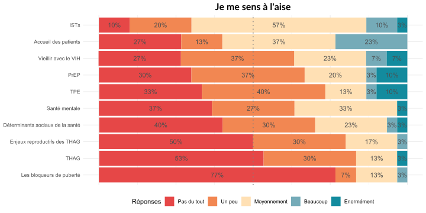
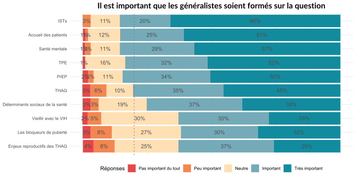
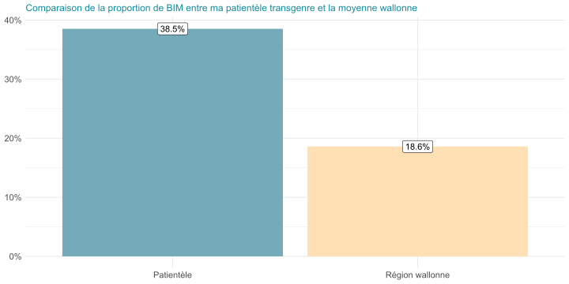
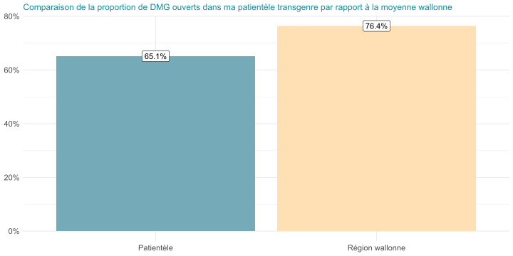

La santé des minorités sexuelles et de genre
Module uro-génital MS2/MS3
Dr Maxence Ouafik
Département de Médecine Générale
02/10/2025
https://t.ly/pR-4
Préambule
De qui parle-t-on ?
Sexes, genres et sexualités

Figure 1: Distinction entre sexes, genres et sexualités
Un focus sur les pratiques
- Les minorités sexuelles et de genre (MSG) représentent un ensemble divers d’identités, de positionnements sociaux et de pratiques
- Dans le cadre de ce cours, nous ne nous intéresserons pas aux identités en tant que telles (gays, bisexuel·le·s, lesbiennes…), mais bien aux pratiques, car ce sont elles qui importent pour les points qui seront abordés.
- 2 termes sont utiles dans ce contexte médico-épidémiologique
- HSH : Hommes ayant des relations sexuelles avec d’autres hommes
- FSF : Femmes ayant des relations sexuelles avec d’autres femmes
Pourquoi parler de ce sujet ?
Parce qu’il s’agit d’une nécessité déontologique

Quels sujets aborder ?
Résultats des questionnaires MG
Figure 3: Aisance des médecins généralistes
Figure 4: Intérêt des médecins généralistes
Résultats des questionnaires communautaires
Figure 5: Priorités des MSG sur la formation des MG
Comparaison entre intérêt des MG et priorités communautaires
Comparaison entre aisance des MG et priorités communautaires
Sélections des thématiques
- Les ISTs, la PrEP, et le TPE sont des thématiques qui intéressent plus de la moitié des assistant·e·s sondé·e·s et qui sont jugées prioritaires par plus de 80% des MSG sondées
- Le vieillissement avec le VIH intéressait également une majorité des assistant·e·s sondé·e·s
- Le traitement hormonal d’affirmation de genre (THAG) est le sujet qui est à la fois considéré comme prioritaire par plus de 80% des MSG et mal maîtrisé par plus de 80% des assistant·e·s
L’enjeu de l’accès au soin des personnes transgenres
Contexte
- Un passé de pathologisation encore présent
- L’habitude d’être déçu·e
- La discrimination dans les soins
En pratique
- Plus grande tendance à reporter les soins ou à peiner pour trouver un·e professionnel·le [1,2]
- Expérience de refus de soins, de violence verbale et physique (durant l’examen) [1]
- Une tendance à prioriser les soins transspécifiques en négligeant les autres [3]
- Des facteurs individuels et structurels (précarité, instabilité de logement, violence) [3]
- Un manque de formation criant [3,4,4,5]
Une question d’organisation des soins
- En Belgique, les soins trans-spécifiques sont officiellement centralisés au sein d’équipes pluridisciplinaires
- Il y en a deux sur tout le territoire
- Cette faiblesse de l’offre entraîne des temps d’attente souvent excessifs, la nécessité de parcourir des distances parfois importantes pour accéder à un·e médecin, et une monopolisation de l’offre de soin [6]
- Cette hyperspécialisation des soins trans-spécifiques, relayés à la troisième ligne, renforce intrinsèquement une altérisation des personnes transgenres, les faisant passer pour des individus aux besoins exceptionnels ne pouvant être gérés que par des équipes ultra-spécialisées [7]
- Elle concourre aussi à dépossèder les deux premières lignes des capacités nécessaires pour soigner correctement les personnes transgenres
L’envie et la nécessité d’une première ligne compétente
- L’hôpital peut être perçu comme un endroit anxiogène, au sein duquel on est envoyé contre son gré, plutôt qu’un lieu de soin que l’on décide librement de fréquenter [7]
- L’hôpital constitue également un lieu où les disparités de pouvoir sont renforcées [7]
- Les personnes transgenres sont désireuses d’avoir plus de service de soins particulièrement en première ligne [8]
- Une prise en charge trans-spécifique décentralisée en première ligne permet de favoriser l’accès au soin, le libre choix des médecins et des traitements, ainsi qu’une meilleure implication des médecins au sein de la communauté [6]

Figure 6: Le carré de White
Illustration issue de ma pratique



Figure 8: Mobilité géographique des patient·e·s transgenres vu·e·s depuis un an (N = 111)
Dépistage et prise en charge des ISTs
VIH
| Dépistage | Traitement | Suivi |
|---|---|---|
|
Référer | Référer |
Chlamydia et gonorrhée
| Dépistage | Traitement | Suivi | |
|---|---|---|---|
|
|
|
|
À titre de réflexion
- Certains éléments indiquent que la gonorrhée peut se transmettre par la salive (anulingus, baisers, fellation) [10]
- Des études (anciennes) ont montré que la salive avait un effet inhibiteur sur Chlamydia [10]
- Des doutes subsistent sur une migration de Chlamydia oropharyngé vers la zone anale par translocation le long du tractus gastro-intestinal [10]
- Le screening de gonorrhée chez les HSH asymptomatiques a probablement peu d’impact sur la prévalence tout en exposant à des risques majeurs d’antibiorésistance [11,12]
Syphilis
Interprétation de la sérologie
- Les tests tréponémiques (TPHA) ont tendance à rester positifs à vie
- Les tests non tréponémiques (VDRL) décroissent lentement, mais peuvent parfois rester positifs à vie
| TPHA | VDRL | Interprétation |
|---|---|---|
| Positif | Positif | Syphilis active |
| Positif | Négatif | Syphilis traitée ou latente très précoce ; anamnèse + retester |
| Négatif | Positif | Faux positif ; retester |
Traitement et suivi
- Syphilis précoce (primaire, secondaire ou latente précoce) : 2 ampoules de Penadur IM ou doxycycline 100mg 2x/J pendant 14J si allergie
- Syphilis tardive : Penadur IM 2 ampoules 1x/semaine pendant 3 semaines ; référer si allergie
- Neurosyphilis, symptômes cardiaques ou gommes syphilitiques : référer
- Sérologie à 3, 6 mois et 12 mois [et 24 mois] (ou plus tôt si réapparition des symptômes) ; une chute de 4x le titre équivaut à une guérison
Mycoplasma genitalium
- Préoccupant au vu de sa capacité majeure à développer des résistances [13]
- Retrouvé dans 15-25% des urétrites non-gonococciques et 10-13% des PID [13]
- Généralement asymptomatique [13]
- Lorsque des symptômes sont présents, il donne généralement des urétrites ou des cervicites avec saignements post-coïtaux [13]
- Impact sur la fertilité méconnu ; données préliminaires sur une association avec la prématurité et les fausses couches [13]
- Vu la forte antibiorésistance et le peu d’expression clinique il ne faut pas le rechercher, sauf si urétrite de cause inconnue
- Si besoin d’un traitement : Doxycycline 100mg 2x/J pendant 7 jours suivi par Azithromycine 1g en prise unique + 500mg par jour pendant 3 jours de plus [9]
- Si résistance aux macrolides : Doxycycline 100mg 2x/J pendant 7 jours suivi par Moxifloxacine 400mg 1x/J pendant 7 jours
Hépatites [9]
- L’hépatite A peut se transmettre par anulingus
- L’hépatite B se transmet par les fluides sexuels et le sang
- L’hépatite C peut se transmettre par voie sexuelle entre hommes
- La vaccination est recommandée pour les HSH
HPV
- Pas de guidelines de dépistage pour les hommes cisgenres, même si les HSH sont à haut risque [9]
- Dépistage tous les trois ans dès 25 ans si col de l’utérus
- Grosse sous-utilisation du dépistage chez les FSF [14] et les hommes transgenres
- Vaccination recommandée jusqu’à 26 ans pour les HSH, mais peu de données en situation réelle sur l’efficacité [15]
- La vaccination nonavalente a le potentiel de prévenir 90% des cancers cervicaux, 79% des cancers anaux, 61% des cancers vaginaux, 25% des cancers du pénis, 23% des cancers vulvaires, et 21% des cancers oropharyngés !
Vaginose bactérienne [9]
Définition et diagnostic
- La vaginose bactérienne est une dysbiose résultant du remplacement des Lactobacilles par des bactéries anaérobiques telles que G. Vaginalis, Prevotella, et Mobiluncus
- La contraception hormonale (progestative et œstroprogestative) apporte une certaine protection
- Portage concomitant très fréquent entre FSF et les données épidémiologiques démontrent clairement une transmission sexuelle dans cette population
- Provoque des décharges généralement malodorantes
- Augmente le risque d’IST et de complications durant la grossesse
- Méthode de diagnostic de référence : score de Nugent sur frottis vaginal. Il s’agit de la concentration relative entre lactobacilles et bactéries associées à une vaginose.
- 0-3 : flore normale
- 4-6 : flore intermédiaire déséquilibrée
- 7-10 : vaginose
Traitement
- Traitement : Métronidazole 500mg 2x/J pendant 7 jours ou en application topique une fois par jour pendant 5 jours
- Alternative : Clindamycine topique une fois par jour, avant d’aller coucher, pendant 7 jours
- Récurrences fréquentes ; utiliser le même traitement ou une alternative
- Possibilité de traitement suppressif : application topique 2x/semaine pendant plus de trois mois ; bénéfices ne perdurant pas à l’arrêt du traitement
- Pas de preuve scientifique d’un intérêt de traiter les partenaires
Trichomonas vaginalis [9]
- IST non virale la plus fréquente dans le monde
- Pas de dépistage asymptomatique ; rechercher en cas de perte vaginale anormale (malodorante, jaunâtre/verdâtre), accompagnée ou non d’irritation vulvaire
- Peut également donner des urétrites, épididymites, et prostatites
- Diagnostic : PCR ; Trichomonas arrête de bouger très rapidement et la sensibilité de l’évaluation microscopique chute à 20% après une heure post-collection
- Traitement : Métronidazole 500mg 2x/J pendant 7 jours si infection vaginale ; 2g en prise unique si prostatite/urétrite/épididymite ou traitement d’un partenaire
- Différemment à la vaginose, le traitement des partenaires est indispensable pour espérer une guérison
- Si récurrence, on a peu d’options… Métronidazole 2g pendant 7J en l’absence de réexposition ou répéter le traitement, si réexposition
Quelques mots sur les FSF
- Gros manque de recherche scientifique sur ce sujet [16]
- Sous-utilisation des services de prévention et de gynécologie et gros manque de connaissance sur la santé sexuelle [14]
- Principalement exposées aux vaginoses bactériennes, aux trichomonas, au HPV et à l’HSV. [9]
- Transmission possible de Chlamydia et Gonorrhée [9]
- Case reports de transmission de VIH et de syphilis. [9]
- Digue dentaire, doigtiers et nettoyage des sex toys
Quelques mots sur les personnes transgenres
- Presque aucune étude sur le sujet ; extrapolation à partir des pratiques et de l’anatomie [9]
- Attention à s’adapter au langage employé et à ne pas se montrer intrusif
- Peu de données sur les néovagins ; HSV/HPV/Chlamydia/Gonorrhée décrites. [9]
- Si métaoïodioplastie avec élongation urétrale sans vaginectomie, un frottis cervical est nécessaire, car l’échantillon urinaire ne sera pas performant
La PrEP
Intérêt et prescription
- Bithérapie consistant en une association de Tenofovir et d’Emtricitabine visant à empêcher la contamination au VIH avant un rapport sexuel
- Prescription via un centre de référence VIH
- Remboursement si dépistage tous les trois mois et avis de l’infectiologue
- Permet une protection quasi complète contre le VIH, si prise correctement, mais n’offre aucune protection contre les autres ISTs
Schéma de prise
- 1 comprimé pr jour ; peut être pris à la demande chez les HSH

Figure 9: Schéma de prise à la demande de la PrEP
Précautions et effets indésirables
- Précautions particulières si patient avec un HBV chronique (risque théorique de flambée mais pas de CI)
- Entraîne une diminution de la densité osseuse (non-pathologique) et une diminution de la clairance de créatinine (non-pathologique également) ; les deux sont réversibles à l’arrêt du traitement
Le TPE [17]
Indication
- Recommandé si risque de transmission significatif du VIH (> 1/1000)
- À discuter si risque intermédiaire (entre 1/10 000 et 1/10 000)
- Non recommandé en dessous
- Doit être initié idéalement dans les 24h, mais peut être proposé jusqu’à 72h
- Durée du traitement : 28 jours
- Effets indésirables : asthénie et gastro-intestinaux
Calcul du risque
- Le risque est calculé en mesurant le risque que la personne à l’origine de l’exposition ait le VIH (Table 4 (a)), multiplié par le risque par exposition (Table 4 (b))
- Certaines situations augmentent ce risque : lésions muqueuses, charge virale élevée (primo-infection), menstruations, présence d’une IST, non-circoncision, éjaculation
Table 4: Calcul du risque de tranmission du VIH
| Groupe | Prévalence |
|---|---|
| HSH (Flandre) | 5% |
| HSH (Bruxelles) | 9% |
| HSH (cruising) | 14.5% |
| Travailleurs du sexe | 14% |
| Travailleuses du sexe (Europe occidentale) | < 1% |
| Travailleuses du sexe (Europe de l’Est) | 2,5 à 8% |
| Migrants d’Afrique subsaharienne | 4.2% |
| Migrantes d’Afrique subsaharienne | 5.9% |
| Pratique | Risque de transmission par acte |
|---|---|
| Sexe anal réceptif avec éjaculation | 1/65 |
| Sexe anal réceptif | 1/90 |
| Partage de matériel d’injection | 1/149 |
| Sexe anal insertif (non circoncis) | 1/161 |
| Sexe anal réceptif sans éjaculation | 1/170 |
| Sexe anal insertif | 1/666 |
| Sexe anal insertif (circoncis) | 1/909 |
| Sexe vaginal réceptif | 1/1000 |
| Sexe vaginal insertif | 1/1219 |
| Fellation | < 1/10 000 |
En pratique
- Recommandé dans tous les cas si sexe anal
- À envisager si sexe vaginal
- Non-recommandé si sexe oral, sauf si primo-infection VIH + lésions muqueuses orales
Vieillir avec le VIH
Contexte
- Avec le développement de traitements antirétroviraux efficaces, la population de PVVIH [^Personnes vivant avec le VIH] s’est agrandie avec le temps
- Les PVVIH de plus de 50 ans représentent désormais 50% des PVVIH aux USA et atteindront 70% d’ici 2030 [18]
- Toutefois, malgré l’efficacité des ARV, une différence persiste au niveau des années de vie en bonne santé, suggérant un vieillissement prématuré des PVVIH [19]
VIH et fragilité [18]
- La fragilité est un état de vulnérabilité accrue chez les personnes âgées augmentant les risques de survenue d’évènements cliniques défavorables (hospitalisation, institutionalisation, et décès)
- La fragilité est la conséquence d’une perturbation des fonctions homéostatiques et d’un déclin dans les réserves physiologiques
- L’inflammation chronique semble jouer un rôle prépondérant dans la survenue d’un phénotype fragile et le vieillissement constitue en lui-même un état d’inflammation chronique
- Cet état de fait est amplifié chez les PVVIH qui, même lorsque leur charge virale est indétectable, conservent un état d’activation immunitaire et d’inflammation
Une question complexe [19]
- La question demeure de savoir si le VIH accélère le vieillissement (c’est-à-dire qu’il entraîne des évènements plus précocément que dans la population générale) ou s’il l’accentue (c’est-à-dire que les évènements surviennent au même âge, mais plus fréquemment)
- En outre, l’effet sur le long terme des ARV, les aspects comportementaux, ainsi que les co-infections contribuent à complexifier le problème
- Les ARV peuvent entraîner :
- Dysfonction mitochondriale, toxicité rénale et osseuse (Tenofovir)
- Résistance à l’insuline, dyslipidémie, sénéscence des cellules endothéliales artérielles (inhibiteurs de la protéase)
- Prise de poids et symptômes neuropsychiatriques (inhibiteurs de l’intégrase)

Figure 10: Vieillissement et VIH (tiré de [19])
Rôles du médecin généraliste [20]
Santé cardio-vasculaire
- Risque accru de morbidité cardiovasculaire, a fortiori si d’autres facteurs de risque sont présents
- Reconnu comme facteur de risque athérosclérotique dans les guidelines maéricaines sur la prise en charge du cholestérol
- Tous les PVVIH devraient être évalués pour leur risque cardio-vasculaire et ceux à risque élevé ou avec des LDL-C trop élevées devraient être pris en charge selon les recommandations en vigueur
- Attention aux interactions sérieuses entre statines, inhibteurs de la protéase et inhibiteurs nucléosidiques de la transcriptase inverse
Diabète
- Impact des ARV sur l’HbA1c ; ne pas s’en servir pour diagnostiquer et se baser sur la glycémie à jeun
Santé osseuse
- Ostéodensitométrie conseillée après 50 ans chez tout le monde
- Supplémentation vitamino-calcique conseillée si ostéopénie avec contrôle à un an
- Ostéodensitométrie à partir de 65 ans chez les personnes transgenres sous THAG ; commencer à 50 ans si gonadectomie + interruption de traitement de 5 ans
Déficit neurocognitif
- Plus fréquents que dans la population générale, mais pas de recommandation de screening, car peu d’option en cas de déficit modéré
Bibliographie
La santé des minorités sexuelles et de genre
1
Ayhan CHB, Bilgin H, Uluman OT, et al. A Systematic Review of the Discrimination Against Sexual and Gender Minority in Health Care Settings. International Journal of Health Services 2020;50:44–61. doi:10.1177/0020731419885093
2
Dahlhamer JM, Galinsky AM, Joestl SS, et al. Barriers to Health Care Among Adults Identifying as Sexual Minorities: A US National Study. American Journal of Public Health 2016;106:1116–22. doi:10.2105/AJPH.2016.303049
3
Uhrig JD, Stryker JE, Bresee S, et al. HIV information needs of transgender people and their healthcare providers. AIDS Care 2019;31:357–63. doi:10.1080/09540121.2018.1499862
4
Korpaisarn S, Safer JD. Gaps in transgender medical education among healthcare providers: A major barrier to care for transgender persons. Reviews in Endocrine and Metabolic Disorders 2018;19:271–5. doi:10.1007/s11154-018-9452-5
5
Irwig MS. Transgender Care by Endocrinologists in the United States. Endocrine Practice 2016;22:832–6. doi:10.4158/EP151185.OR
6
Koehler A, Strauss B, Briken P, et al. Centralized and Decentralized Delivery of Transgender Health Care Services: A Systematic Review and a Global Expert Survey in 39 Countries. Frontiers in Endocrinology 2021;12.
7
Ker A, Fraser G, Fleming T, et al. “A little bubble of utopia”: Constructions of a primary care-based pilot clinic providing gender affirming hormone therapy. Health Sociology Review 2021;30:25–40. doi:10.1080/14461242.2020.1855999
8
Lee JL, Huffman M, Rattray NA, et al. “I Don’t Want to Spend the Rest of my Life Only Going to a Gender Wellness Clinic”: Healthcare Experiences of Patients of a Comprehensive Transgender Clinic. Journal of General Internal Medicine Published Online First: 2022. doi:10.1007/s11606-022-07408-5
9
Workowski KA, Bachmann LH, Chan PA, et al. Sexually Transmitted Infections Treatment Guidelines, 2021. 2021;70.
10
Chow EP, Fairley CK. The role of saliva in gonorrhoea and chlamydia transmission to extragenital sites among men who have sex with men: New insights into transmission. Journal of the International AIDS Society 2019;22:e25354. doi:10.1002/jia2.25354
11
Buyze J, Vanden Berghe W, Hens N, et al. Current levels of gonorrhoea screening in MSM in Belgium may have little effect on prevalence: A modelling study. Epidemiology and Infection 2018;146:333–8. doi:10.1017/S0950268818000092
12
Tsoumanis A, Hens N, Kenyon CR. Is Screening for Chlamydia and Gonorrhea in Men Who Have Sex with Men Associated with Reduction of the Prevalence of these Infections? A Systematic Review of Observational Studies. Sexually Transmitted Diseases 2018;45:615–22. doi:10.1097/OLQ.0000000000000824
13
Pinto-Sander N, Soni S. Mycoplasma genitalium infection. BMJ 2019;l5820. doi:10.1136/bmj.l5820
14
Knight DA, Jarrett D. Preventive Health Care for Women Who Have Sex with Women. 2017.
15
Goodman E, Reuschenbach M, Kaminski A, et al. Human Papillomavirus Vaccine Impact and Effectiveness in Six High-Risk Populations: A Systematic Literature Review. Vaccines 2022;10:1543. doi:10.3390/vaccines10091543
16
Obón-Azuara B, Vergara-Maldonado C, Gutiérrez-Cía I, et al. Gaps in sexual health research about women who have sex with women. A scoping review. Gaceta Sanitaria 2022;36:439–45. doi:10.1016/j.gaceta.2022.01.008
17
Libois A, Florence E, Derdelinckx I, et al. Belgian guidelines for non-occupational HIV post-exposure prophylaxis 2017. Acta Clinica Belgica 2018;73:275–80. doi:10.1080/17843286.2018.1428506
18
Fukui SM, Piggott DA, Erlandson KM. Inflammation Strikes Again: Frailty and HIV. Current HIV/AIDS Reports 2018;15:20–9. doi:10.1007/s11904-018-0372-5
19
Rodés B, Cadiñanos J, Esteban-Cantos A, et al. Ageing with HIV: Challenges and biomarkers. eBioMedicine 2022;77:103896. doi:10.1016/j.ebiom.2022.103896
20
Thompson MA, Horberg MA, Agwu AL, et al. Primary Care Guidance for Persons With Human Immunodeficiency Virus: 2020 Update by the HIV Medicine Association of the Infectious Diseases Society of America. Clinical Infectious Diseases 2021;73:e3572–605. doi:10.1093/cid/ciaa1391